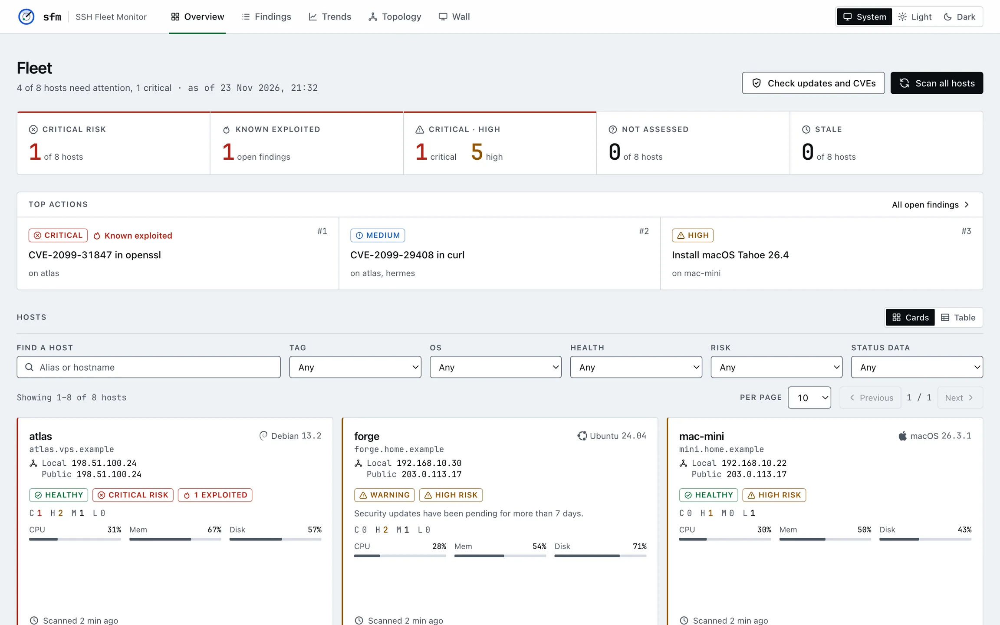
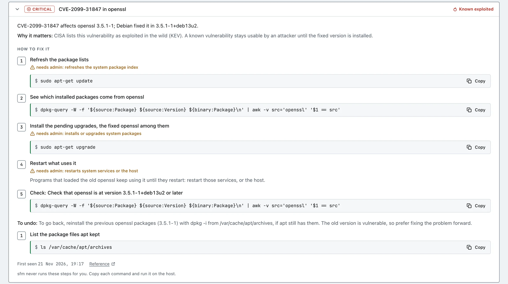

The whole fleet at a glance
Each host gets a health badge, a risk badge and its CPU, memory and fullest-disk use. Above them sit the three actions that matter most across every host.
Early development: no public release yet
Checking a handful of machines today means an SSH session on each one, then top, df and the package manager by hand. sfm reads them all over the SSH access you already have, runs no agent on them, and shows what is healthy, what is at risk and the commands that fix it.

You own a laptop, a couple of VPSs, a home server and a Raspberry Pi. They get checked when something breaks.
top, df and apt or softwareupdate, and try to remember which one was behind.It keeps running the packages it had the last time you looked.
sfm signs in to your hosts with the SSH keys you already use, runs fixed read-only collector scripts, and keeps the results in a local database behind a dashboard on 127.0.0.1.
Each host gets a health badge, a risk badge and its CPU, memory and fullest-disk use. Above them sit the three actions that matter most across every host.
Pending updates and known vulnerabilities on macOS, Debian, Ubuntu and Arch, each matched against its own distribution's security data. Issues with a known exploit are ranked first.
Every finding opens to a plain explanation, numbered commands to copy, a "needs admin" label where root is required, a verify step and a rollback note. sfm never runs them.
sfm mcp gives Claude Code, Codex or any stdio MCP client six typed, read-only tools. No tool takes a command or returns a key, and every call is written to the audit log.
With your consent per host, sfm copies a pinned Lynis release to a temp directory on the host, runs it, deletes it and checks that it is gone.
Agent-based monitoring puts a daemon on every box you add. sfm runs none: it shows macOS and Linux hosts in the same view over SSH, and its dashboard has no option to listen beyond 127.0.0.1.

sfm hosts import reads your ~/.ssh/config. sfm hosts add takes one by hand, and --local adds the machine sfm runs on.
sfm hosts test --all connects to each host and explains any failure in plain words.
sfm web prints a local link. Status scans then repeat every 5 minutes unless you change the interval.
Open a finding, copy its steps, run them yourself, then scan again to see it resolved.
sfm web listens on 127.0.0.1 only, with no option to change it, and every API request needs a token that is new on each start.known_hosts file, which sfm reads and never writes. It never trusts a key on first use.--offline sends nothing.sfm has no public release yet, so there are no customer quotes here. These are facts about the build.
No agent and no daemon. Status and risk scans run fixed read-only scripts over SSH and write no files of their own on the host; on a Mac with Homebrew, the risk scan's brew outdated may refresh Homebrew's own cache. Fix steps are text to copy: sfm never runs them. The optional Lynis audit is the one exception. It needs your consent per host, runs from a temp directory and removes it afterwards.
sfm runs on macOS (Apple Silicon and Intel) and Linux (x64 and arm64). It scans hosts running macOS, Debian, Ubuntu and its derivatives, and Arch Linux and its derivatives. The Lynis audit covers macOS and Debian hosts. There is no Windows build.
By default sfm uses ssh-agent or the IdentityFile already in your SSH config and never copies a key. If you paste or generate a dedicated key, it is stored only as AES-256-GCM ciphertext, with the master key in the OS keychain. No interface prints or returns a private key.
Yes, through sfm mcp. Its six tools read stored scan results. The one tool that reaches a host runs the read-only status collector at most once per 60 seconds per host. Every answer carries a fixed notice that its strings are untrusted data, never instructions.
There is no telemetry and no hosted service. sfm web downloads vulnerability data from seven allowlisted sources. One of them, OSV.dev, receives CVE IDs only, never a package, version or hostname. sfm web --offline uses cached data and sends nothing.
sfm is proprietary software. Pricing and license terms are not announced; they will be published with the first release.
sfm is in early development and has no public release yet. Request early access by email to be told when a build is available.
Requesting access is one email. There is no account to create and no form to fill in.